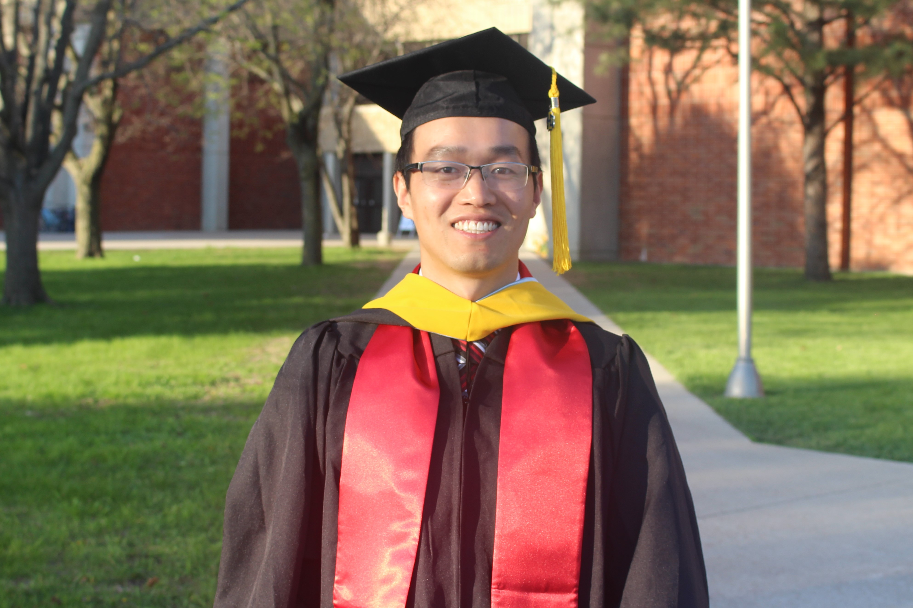

|  |
Shaohu ZhangPh.D. candidate in Computer Science Research Assistant North Carolina State University Email: szhang42 AT ncsu.edu Google Scholar Semantic Scholar |
News
[12/03/19] Passed my written exam! [10/16/19] Naturalistic Driving Data project paper is accepted by TRB'20. [01/07/19] TAing CSC453 Introduction to IoT in Spring 2019. [01/09/18] Shaohu gave a talk in TRB'18. [10/11/17] SmartCurve paper is accepted for presentation and publication by TRB'18. [09/06/17] Glad to receive the NSF travel grant from MobiCom 2017! [06/19/17] I passed my final oral exam.Cheer up! [05/29/17] I will join the CSC PhD program at North Carolina State University this Fall. [04/23/17] Our paper was accepted to ICCCN'17! [10/06/16] Congrats Shaohu on winning the SenSys'16 Travel Award ! [09/01/16] Our poster paper was accepted to ACM SenSys'16. [08/10/16] Our paper was accepted to IEEE ITSC'16. [05/01/16] Our paper was accepted to IEEE VTC'16. [04/18/16] Congrats Shaohu on winning the Sigma Xi Graduate Research Award! [03/31/16] Shaohu presented his paper on the Chapter of SDSU, Sigma Xi Graduate Research Competition. [01/12/15] Shaohu presented his paper on the 94th Transportation Research Board meeting in Washington D.C.. |
I am a third year Ph.D. student in Computer Science. I got a masters degree from South Dakota State University. Before that, I was a Logistics Engineer in Shanghai. I had worked on a number of projects on mobile sensor systems for Intelligent Transportation Systems. My primary research objectives and interests are in the area of wireless networks and mobile computing. I am fascinated with the designing, analyzing and modeling of mobile applications or wireless network to explore how to implement computation and how best to pass what I have learned to others. Currently, I work with Dr. Muhammad Shahzad focusing on sensor sensing, mobile computing and IoT.